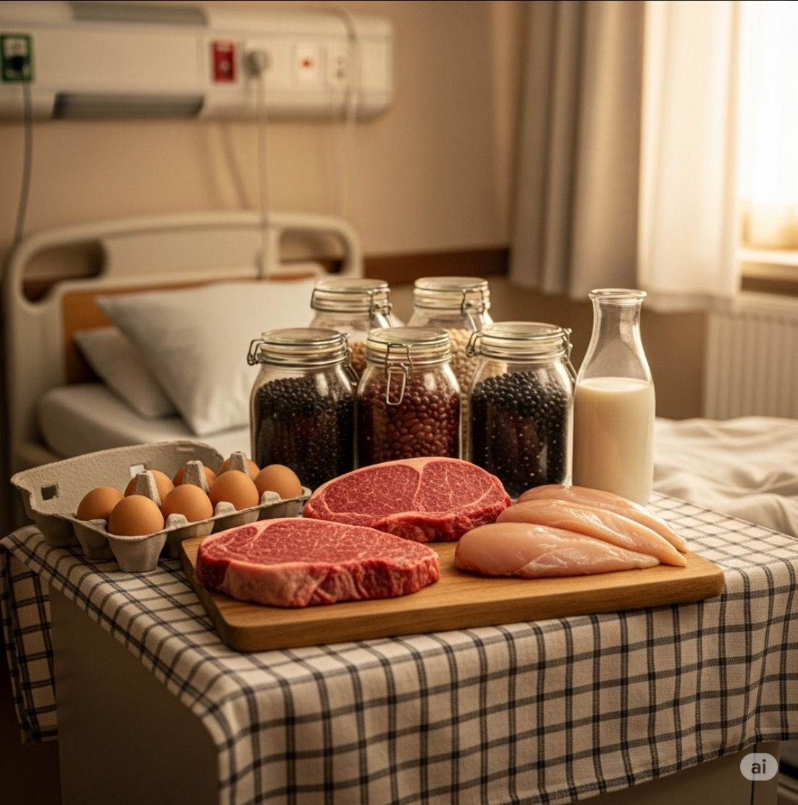
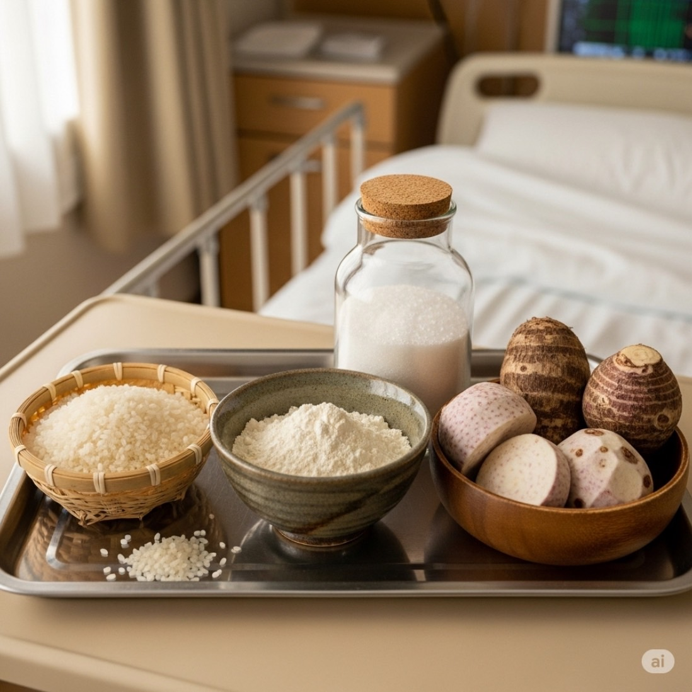
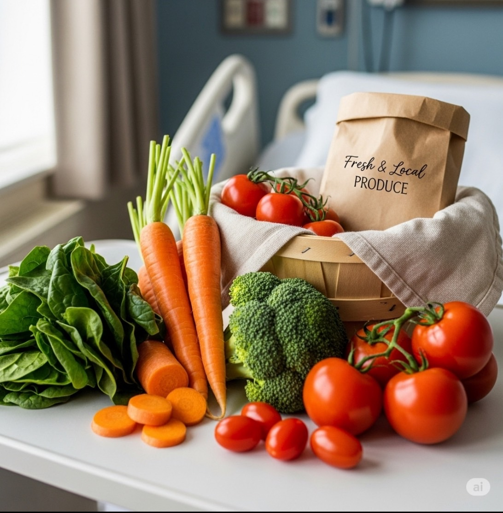
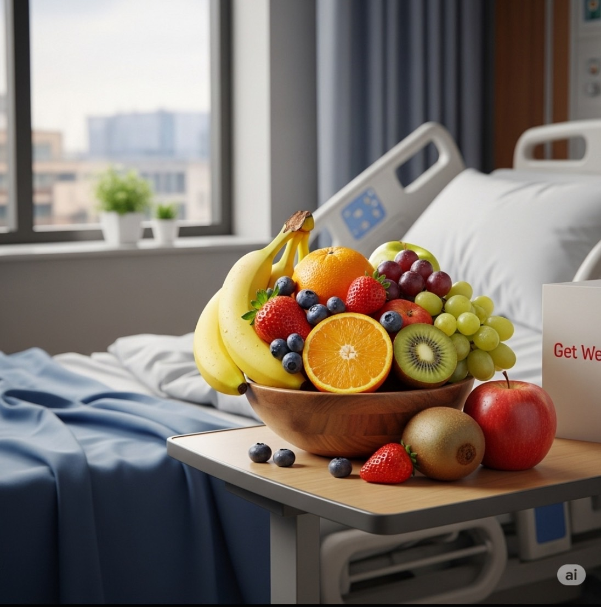
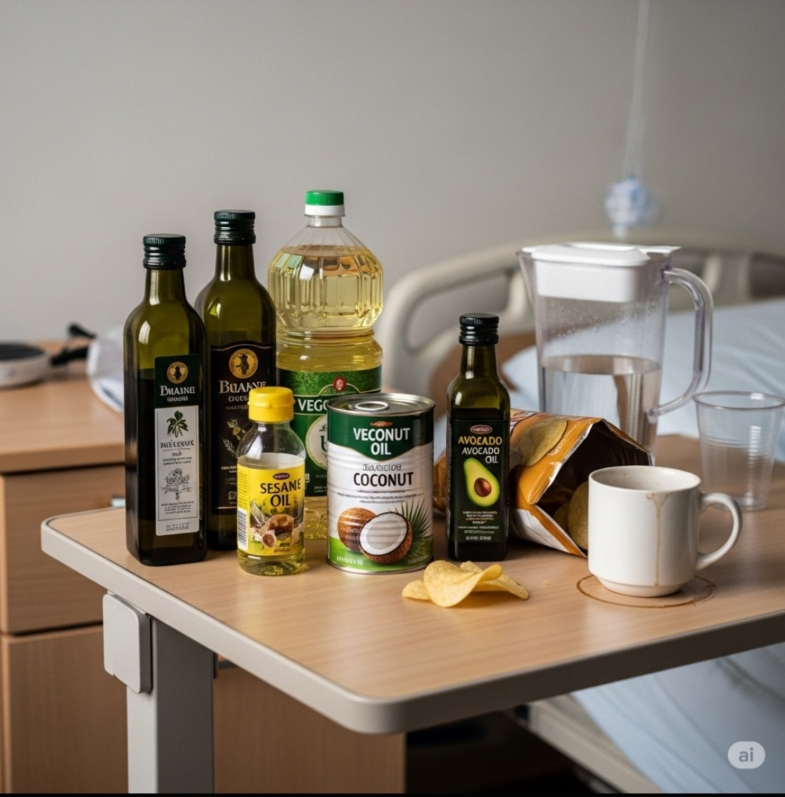

<!DOCTYPE html>
<html lang="en">
<head>
    <meta charset="UTF-8">
    <meta name="viewport" content="width=device-width, initial-scale=1.0">
    <title>Diet</title>
    <link rel="stylesheet" href="style.css">
    <meta name="viewport" content="width=device-width, initial-scale=1.0">
<style>
@import url('https://fonts.googleapis.com/css2?family=Kanit:ital,wght@0,100;0,200;0,300;0,400;0,500;0,600;0,700;0,800;0,900;1,100;1,200;1,300;1,400;1,500;1,600;1,700;1,800;1,900&display=swap');

</style>

</head>
</html>
<body>
      <!--parent element-->
    <div class="top-bar">
        <div class="top-bar-tel">
            <p>02-221-1501</p>
        </div>
        <div class="top-bar-shop">
            <p>Welcome to Eldermate</p>
        </div>
    </div>
    <nav>
        <div class="logo"><!--รูปโลโก้-->
            <a href="#">Eldermate</a>
        </div>
        <ul class="menu"><!--เมนูต่างๆ-->
            <li><a href="index.html">HOME</a></li>
            <li><a href="about us.html">ABOUT US</a></li>
            </ul>
        <div class="search-box">
            <i class="fa fa-search" id="search-button"></i> 
            <input type="text" id="search-input" class="search-input" placeholder="S E A R C H">
            <i class="fa fa-microphone"></i>
        </div>

        <ul class="menu2">
            <li><a href="question.html">QUESTION</a></li>
            <li><a href="contact us.html">CONTACT US</a></li>
            </ul>
        <div id="result">
          </div>
    </nav>
<script src="javascript.js"></script>
<div class="protein">
<div class="di">
    <h1>โภชนาการ</h1>
    <h3>อาหารเป็นปัจจัยสำคัญในการดำรงชีวิต โดยเฉพาะผู้สูงอายุยังคงมีความต้องการพลังงานและสารอาหารที่มีคุณภาพสูง<br>เพื่อการดำรงชีวิตอย่างมีคุณภาพจึงควรกินอาหารให้ครบทั้ง 5 หมู่เพียงพอและเหมาะสมกับความต้องการของร่างกาย</h3>
    </div>

      <div class="di1">
    <div class="ditext1"><h2>หมู่ที่ 1 โปรตีน</h2><br><br>
<h2>เนื้อสัตว์ต่างๆ ไข่ นม ถั่วเมล็ดแห้งต่างๆ เพื่อเสริมสร้างและซ่อมแซมร่างกาย                                                                                        
          - เนื้อปลา จะเหมาะมากสำหรับผู้สูงวัยเพราะย่อยง่าย
          - ไข่ไก่หรือไข่เป็ดควรต้มจนสุก
          - นมสดพร่องมันเนย เป็นอาหารที่ให้แคลเซียมและโปรตีน
          - ถั่วเมล็ดแห้ง เป็นอาหารที่ให้โปรตีนสูง และมีราคาถูก ใช้แทนอาหารจำพวกเนื้อสัตว์ได้ เช่น เต้าหู้ โปรตีนเกษตร  
 </h2><br><br> </div>
    
        </div>
         
        <div class="di2">
    <div class="ditext2"><h2>หมู่ที่ 2 คาร์โบไฮเดรต</h2><br><br>
<h2>ข้าว  แป้ง น้ำตาล เผือก มัน             
          สารอาหารหมู่นี้เป็นอาหารที่ให้พลังงานเป็นส่วนใหญ่<br>
          ผู้สูงวัยควรกินในปริมาณที่พอเหมาะไม่ควรกินมากเกินไป  
 </h2><br><br> </div>
    
        </div>
         
        <div class="di3">
    <div class="ditext3"><h2>หมู่ที่ 3 เกลือแร่</h2><br><br>
<h2>ผักต่าง ๆ ผักเป็นอาหารที่อุดมด้วยวิตามินและแร่ธาตุ ผู้สูงวัยควรเลือกกินผักหลายๆชนิดสลับกัน ควรต้ม หรือนึ่งจนสุก<br>
    ไม่ควรบริโภคผักดิบเพราะย่อยยากและทำให้ท้องอืดได้
 </h2><br><br> </div>
    
        </div>
          
        <div class="di4">
    <div class="ditext4"><h2>หมู่ที่ 4 วิตามิน</h2><br><br>
<h2>  ผลไม้ต่างๆ ผู้สูงวัยสามารถผลไม้ได้ทุกชนิดและควรกินผลไม้ทุกวันเพื่อให้ได้วิตามินซีและเส้นใยอาหาร<br>
    และควรเลือกผลไม้ที่มีเนื้อนุ่ม เคี้ยวง่าย ได้แก่ มะละกอสุก กล้วยสุก ส้ม ฯลฯ 
 </h2><br><br> </div>
    
        </div>
               
        <div class="di5">
    <div class="ditext5"><h2>หมู่ที่ 5 ไขมัน</h2><br><br>
<h2>  ไขมัน/น้ำมันพืช ควรใช้น้ำมันพืชปรุงอาหาร เช่น น้ำมันถั่วเหลือง น้ำมันรำ <br>
    หลีกเลี่ยงการใช้น้ำมันจากสัตว์และน้ำมันพืชบางชนิด เช่นน้ำปาล์มและน้ำมันมะพร้าว
 </h2><br><br> </div>
    
        </div>